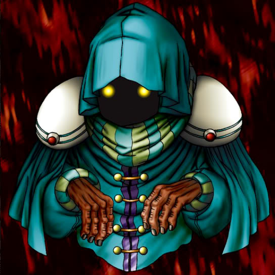

Phantom Dewan

Description: "When this card is flipped face-up in battle, spellbinds opposing monster for 3 turns."
STATS
ATK: 700
DEF: 600DECK COST
Deck Cost per Card: 18EFFECT NOT IMPLEMENTED
Fusion List (20 Possible Fusions)
- Phantom Dewan + Ancient Jar = Ushi Oni
- Phantom Dewan + Bat = Disk Magician
- Phantom Dewan + Bone Mouse = Magical Ghost
- Phantom Dewan + Celtic Guardian = Dark Elf
- Phantom Dewan + Cyber Commander = Disk Magician
- Phantom Dewan + Dancing Elf = Dark Elf
- Phantom Dewan + Fiend's Hand = Magical Ghost
- Phantom Dewan + Kaminarikozou = The Immortal of Thunder
- Phantom Dewan + LaLa Li-oon = The Immortal of Thunder
- Phantom Dewan + Lesser Dragon = Blackland Fire Dragon
- Phantom Dewan + Mech Mole Zombie = Magical Ghost
- Phantom Dewan + Mega Thunderball = The Immortal of Thunder
- Phantom Dewan + Morphing Jar = Ushi Oni
- Phantom Dewan + Mystic Lamp = Lord of the Lamp
- Phantom Dewan + One-Eyed Shield Dragon = Blackland Fire Dragon
- Phantom Dewan + Pot the Trick = Ushi Oni
- Phantom Dewan + Shadow Specter = Magical Ghost
- Phantom Dewan + Wicked Dragon with the Ersatz Head = Blackland Fire Dragon
- Phantom Dewan + Wing Egg Elf = Dark Elf
- Phantom Dewan + Yamatano Dragon Scroll = Blackland Fire Dragon